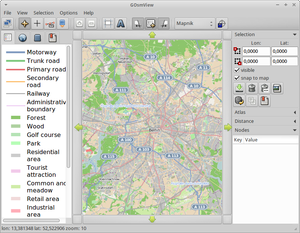

gosm
Dieser Artikel wurde für die folgenden Ubuntu-Versionen getestet:
Ubuntu 16.04 Xenial Xerus
Zum Verständnis dieses Artikels sind folgende Seiten hilfreich:
gosm  (Gtk OpenStreetMap tool) ist ein Karten-Betrachter und stellt eine freie Alternative zu Google Maps
(Gtk OpenStreetMap tool) ist ein Karten-Betrachter und stellt eine freie Alternative zu Google Maps  und - jedoch mit deutlich geringerem Funktionsumfang - Google Earth dar.
und - jedoch mit deutlich geringerem Funktionsumfang - Google Earth dar.
Das Programm ruft Kartenmaterial online vom freien Projekt OpenStreetMap ab und kann es auch lokal speichern. Die Ansicht kann man zwischen Osmarender, dem Open-Source-Renderer Mapnik und einer Fahrradkarte wechseln. Verschiedene Ansichtsebenen gestatten es dem Benutzer die in der Karte angezeigten Objekte den eigenen Wünschen entsprechend zu variieren und sich für den gewählten Kartenausschnitt z.B. alle Biergärten anzeigen zu lassen. Zusätzlich lassen sich Strecken vermessen.
Das Kartenmaterial kann auf Wunsch in andere Formate exportiert werden. Für den Export als PDF ist Java erforderlich.
|  |
| Kartenausschnitt in gosm |
Installation¶
Gosm ist nicht in den Paketquellen von Ubuntu enthalten und muss von Hand installiert werden.
Achtung!
Quelltexte aus Fremdquellen können das System gefährden.
Die aktuelle Version des Programms kann als Quelltextarchiv von der Projektseite heruntergeladen werden. Dieses Quelltextarchiv beinhaltet bereits eine vorkompilierte, ausführbare Programmdatei, die allerdings nicht kompatibel mit aktuellen Ubuntu-Versionen ist. Der Quelltext muss deswegen einmal neu kompiliert werden.
Dazu werden folgende Pakete zusätzlich benötigt [1]:
build-essential (main)
libwebkit-dev (main)
libgtk2.0-dev (main)
libcurl4-gnutls-dev (main)
libbz2-dev (main)
 mit apturl
mit apturl
Paketliste zum Kopieren:
sudo apt-get install build-essential libwebkit-dev libgtk2.0-dev libcurl4-gnutls-dev libbz2-dev
sudo aptitude install build-essential libwebkit-dev libgtk2.0-dev libcurl4-gnutls-dev libbz2-dev
Der folgende Ablauf zum Kompilieren des Quelltexts [9] im Terminal [2] wir anhand der zu diesem Zeitpunkt aktuellen Version Gosm 0.0.9 beschrieben [9]:
cd ~/Downloads wget http://sourceforge.net/projects/gosm/files/gosm/0.09/gosm.0.0.9.tar.gz tar xzf gosm.0.0.9.tar.gz cd gosm make
Anschließend lässt sich das Programm direkt aus dem entpackten Quelltextverzeichnis starten:
./gosm
Um das Programm für alle Benutzer systemweit verfügbar zu machen kann der Ordner mit Root-Rechten nach /opt verschoben werden [3]:
sudo mv ~/Downloads/gosm /opt/gosm
Nur bei Ubuntu 12.04 Precise Pangolin: Um einen Programmstarter für Gosm hinzuzufügen, öffnet man einen Texteditor [8] mit Root-Rechten [3] und erstellt eine Textdatei mit folgendem Inhalt:
[Desktop Entry] Name=Gosm GenericName=GTK OpenStreetMap Tool Comment=Betrachter für OpenStreetMap.org Exec=/opt/gosm/gosm Icon=/opt/gosm/icons/gosm.png Terminal=false Type=Application Categories=Education;Science
Diese Datei wird abschließend unter /usr/local/share/applications/gosm.desktop gespeichert.
Das Programm legt beim ersten Start den Ordner ~/.config/gosm/ im Homeverzeichnis an. In diesem werden alle Konfigurationen benutzerweit abgelegt.
Bedienung¶
Das Programm ist intuitiv zu bedienen - die Steuerung erfolgt wahlweise mit der Maus  oder per Tastatur.
oder per Tastatur.
Die wichtigsten Symbole im Überblick:
| Bedienung | |
| Schaltfläche | Beschreibung |
| "map-key" | Legende |
| "namefinder" | Städte/Länder auf der Karte finden via Namefinder |
| "save map and position" | Speichert die derzeitige Position auf der Karte. |
| "Measure mode" | Distanz (Luftlinie) messen. |
| "points of interest" | Anzeige von POIs festlegen - z.B. Gastronomie, kulturelle Einrichtungen et cetera. |
| "Selection mode" | Kartenausschnitt wählen - drücken, Ausschnitt wählen und Taste loslassen. Die geographische Länge und die geographische Breite wird im Programmfenster angezeigt. |
| "export image" | Den gewählten Kartenausschnitt als Bild exportieren. |
| "export to pdf" | Den Ausschnitt der Karte als PDF exportieren. |
| Den Ausschnitt der Karte als PDF exportieren. | |
| Navigationsbuttons und Leisten ein/ausblenden. | |
Konfiguration¶
Die Programmeinstellungen erreicht man über "Options -> Preferences".
Offline Browsing¶
Gosm speichert das Kartenmaterial unter /tmp/osm/. Dieser Ordner wird (erst) beim nächsten Systemstart gelöscht. Damit man das Material auch ohne Internetzugang (offline) nutzen kann, ändert man die Pfade hinter "cache_dir_*" entsprechend ab.
Um ganze Regionen offline verfügbar zu halten, wählt man das Gebiet aus und lädt dieses mit herunter. Anschließend die gewünschten Auflösungsstufen auswählen.
Atlas¶
Unter dem Punkt "Atlas" im Hauptmenü kann man festlegen, in welcher Größe Bild- und PDF-Dateien abgespeichert werden sollen, um diese ggf. für Ausdrucke zu verwenden.
Hinweis:
Beim Export von Bildern oder PDFs wird nur das im Festplattencache vorhandene Bildmaterial verwendet. Fehlt etwas, bleiben die entsprechenden Kacheln weiss. Zum Export muss also zunächst der entsprechende Bereich markiert und im gewünschten Zoomlevel heruntergeladen werden.
Handbuch¶
Ein englisches Handbuch ist unter "Help -> Manual" zu finden.
Deinstallation¶
Um das Programm vollständig zu entfernen, sind ausgehend von der oben beschriebenen Installation folgende Schritte notwendig [2][3]:
rm -r ~/.config/gosm/ sudo rm /usr/local/share/applications/gosm.desktop sudo rm -r /opt/gosm/
Tastenkürzel¶
| Gosm | |
| Taste(n) | Funktion |
| A | Navigationsmodus |
| S | Auswahlmodus |
| D | Distanzmodus |
| F4 | Anzeigen / Verbergen der Seitenleiste auf der linken Seite |
| F5 | Anzeigen / Verbergen der Bewegung-Kontrollen auf der Karte |
| F6 | Anzeigen / Verbergen der Seitenleiste auf der rechten Seite |
| F7 | Anzeigen / Verbergen der Statusleiste |
| F8 | Anzeigen / Verbergen der Symbolleiste |
| F9 | Anzeigen / Verbergen der Menüleiste |
| F10 | Menü |
| F11 | Vollbild (de)aktivieren |
| ← + → + ↑ + ↓ | Navigation |
| Bild ↑ + Bild ↓ | Zoom in/out |
 Programmübersicht
Programmübersicht- Erstellt mit Inyoka
-
 2004 – 2017 ubuntuusers.de • Einige Rechte vorbehalten
2004 – 2017 ubuntuusers.de • Einige Rechte vorbehalten
Lizenz • Kontakt • Datenschutz • Impressum • Serverstatus -
Serverhousing gespendet von